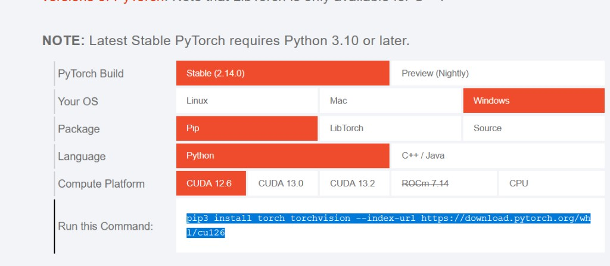

Installation
Background. HABIT is a Python package that splits tumours into habitats (sub-regions whose voxels behave alike across images) and quantifies them.
Purpose. At the end you have a conda environment named habit in
which habit --version prints the installed version.
Key terms.
conda environment – a separate folder with its own Python and packages;
conda activate habitswitches the terminal to it, so HABIT’s dependencies do not clash with other software.
This page is for absolute beginners on Windows (macOS / Linux notes where
they differ). HABIT must run in a conda-activated terminal. On Windows
use Anaconda Prompt or Anaconda PowerShell Prompt (Miniconda:
Miniconda Prompt). System Python without conda activate often
fails with habit: command not found or uses the wrong interpreter.
Python 3.10–3.14 are supported; these docs use 3.10.
1. Install Miniconda
If you already have Anaconda or Miniconda, skip to step 2.
Open the official downloads page: Miniconda.
Check Settings → System → About → System type. Most PCs are 64-bit; download the Windows installer (
.exe) that matches that type.Run the installer and accept the defaults (Next → Next → Install).
You do not need Visual Studio Code for HABIT.
2. Open the conda terminal
Windows (Anaconda / Miniconda installed):
Click the Start button (Windows logo), or press the Windows key. On Windows 10 the Start icon is usually at the bottom-left; on Windows 11 it is often at the bottom-center of the taskbar.
Open the Anaconda3 (or Miniconda) folder in the Start menu, then click Anaconda Prompt or Anaconda PowerShell Prompt (Miniconda: Miniconda Prompt).
Or: with Start open, type
Anaconda Prompt/Miniconda Promptand open that app.Optional: Anaconda Navigator → Environments → Open Terminal on the
habitenv after you create it.

Start → Anaconda3 → Anaconda Prompt / Anaconda PowerShell Prompt (example on Windows 10; on Windows 11 the Start icon may sit at the bottom-center). Your folder name may differ (e.g. Miniconda).
After you open the Prompt you often see (base). That is normal.
macOS / Linux — open Terminal.app / your shell. If conda is not
found, run conda init once for your shell and reopen the terminal.
3. Create and activate the habit env
In the conda terminal:
conda create -n habit python=3.10 -y
conda activate habit
The env name in these docs is ``habit`` (any name is fine if you
activate it). The prompt must show (habit) before any pip or
habit command. Every new terminal session: run conda activate habit
again.
4. Install HABIT from official PyPI
With (habit) showing in the prompt:
pip install -U pip
pip install habitat-analysis -i https://pypi.org/simple
habit --version
5. Optional: PyTorch GPU
Needed only for GPU texture / TorchRadiomics. CPU habitat analysis does not require it.
Open https://pytorch.org/ → Get Started (or Start Locally). Select Your OS, Pip, Python, and the Compute Platform that matches your machine, then run the command the page prints.
{kind=link}

Example on pytorch.org: Windows + Pip + Python + CUDA 12.6. Change
the red cells to match your GPU or choose CPU. Copy Run this
Command into the (habit) prompt.
6. Optional: PyRadiomics
Not installed by default. Needed for voxel_radiomics /
supervoxel_radiomics, habit radiomics, and texture habitat
features. Habitat maps that do not use those extractors do not need it.
Windows — use a prebuilt wheel from
Release v1.0.2
(do not use bare pip install pyradiomics):
pip install https://github.com/lichao312214129/HABIT/releases/download/v1.0.2/pyradiomics-3.1.0-cp310-cp310-win_amd64.whl
Change cp310 in the filename for Python 3.11–3.14.
macOS / Linux:
pip install "pyradiomics>=3.0.1,<3.2"
Optional packages
These do not change habitat computation. Install only what you use.
pyarrow — write a direct pooling voxel table with on the order of millions of rows as parquet. Typical two-step / one-step tables are small; CSV needs nothing extra. Saving the table is optional:
pip install pyarrow
napari — interactive habit view:
pip install "napari[pyqt5]" "npe2>=0.8.2" "pydantic!=2.11.*,>=2.8,<3" -i https://pypi.org/simple
GPU texture speedup numbers: Texture feature maps, alone and with intensity.
From source (developers)
git clone https://github.com/lichao312214129/HABIT.git
cd HABIT
conda create -n habit python=3.10 -y
conda activate habit
pip install -U pip
pip install -e .
habit --version
Problems?
See FAQ. After install: Quickstart: Python API or Quickstart: YAML and CLI.